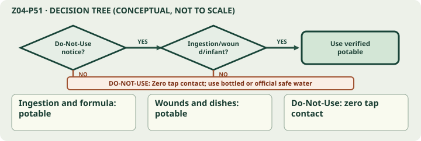

Z04-P51 · Water · New manuscript
Enforce potable-water boundaries for hygiene, wounds and infant formula
Apply safe-water standards consistently to teeth brushing, food washing, wound rinsing and infant feeding during advisories.
When it applies · Boil-water advisories, backcountry camps and disaster outages where untreated water is nearby for utility tasks.
Equipment · Verified potable water, separate labeled utility water if permitted by notice, soap or alcohol hand sanitizer and clean utensils.

Actions
- Use only bottled or properly boiled-and-cooled water for drinking, mixing infant formula, brushing teeth, washing ready-to-eat produce, making ice and washing food-contact dishes.[W29, W07]
- Rinse open wounds only with confirmed clean potable water (or sterile saline if available); never irrigate wounds with untreated stream, flood or bloom-affected water.[W29, W15, T01]
- Under a Do Not Use advisory, obey official prohibitions on bathing, dishwashing and skin contact completely until authorities lift the order.[W07, W29]
Failure recognition · Boiling water for drinking while brushing teeth, washing lettuce or mixing baby formula with unboiled advisory tap water.[W29, W07]
Verify · Confirm every ingestion, oral-hygiene, food-prep, infant-formula and wound-care task draws exclusively from the verified potable supply.[W29, W07, ED]
Stop or change course · If safe water cannot be secured for infant formula or wound care, prioritize ready-to-feed liquid formula and request immediate public-health or medical assistance.[W29, T02, ED]
Evidence and editorial notes
- T01 · American Red Cross · First Aid Steps (current web edition)
- Section: First Aid Steps > Check the scene; check the person · Conditions: Lay responder in United States; assess safety before contact
Support: Check scene safety, responsiveness, breathing and immediately life-threatening conditions.
Limitations: Lay guidance does not replace advanced clinical or rescue protocols. · Conflicting evidence: None; universal first-response opening gate.
Editorial note: Anchors scene-safety-first rule across Z01. · Specialist reviewer: EMS and wilderness medicine
Primary source · checked 2026-11-24 - T02 · American Red Cross · First Aid Steps (current web edition)
- Section: First Aid Steps > Call 9-1-1 · Conditions: Lay emergency response to unresponsiveness, abnormal breathing or severe bleeding
Support: Activate EMS and get needed equipment. Follow dispatcher directions and act within training.
Limitations: Remote locations may delay EMS arrival, requiring sustained stabilization after activation. · Conflicting evidence: None; aligns with NPS-E.
Editorial note: Mandates early emergency activation and dispatcher adherence. · Specialist reviewer: EMS and wilderness medicine
Primary source · checked 2026-11-24 - W07 · CDC · Drinking Water Advisories: An Overview (current web edition)
- Section: Boil water; Do not drink; Do not use · Conditions: Public-water system advisories
Support: The notice determines safe activities. Use another source for do-not-drink notices. Do not use tap water for any purpose under a do-not-use notice unless authorities direct otherwise.
Limitations: Local utility directives supersede general field summaries. · Conflicting evidence: None; exact advisory category is authoritative.
Editorial note: Distinguishes boil-water, do-not-drink, and do-not-use actions explicitly. · Specialist reviewer: Drinking-water utility and public health
Primary source · checked 2026-11-24 - W15 · US EPA · Learn About Harmful Algae, Cyanobacteria and Cyanotoxins (current web edition)
- Section: Cyanotoxins and water treatment · Conditions: Surface water with discolored scum, mats, foul odor, or active HAB advisory
Support: Do not use a suspect bloom as a drinking-water source. Routine field microbial treatment is not a validated method of removing cyanotoxins.
Limitations: Cyanotoxins can persist in visually clear water after a bloom dissipates. · Conflicting evidence: Contradicts naive boil-everything advice; CDC/EPA HAB warnings explicitly prohibit boiling HAB water.
Editorial note: Establishes HABs as a chemical-toxin rejection trigger, not a microbial boil target. · Specialist reviewer: Environmental health and drinking-water safety
Primary source · checked 2026-11-24 - W29 · CDC · How to Make Water Safe in an Emergency (2024-09-19)
- Section: Boil > Safe Water for Infants, Wounds, and Hygiene · Conditions: Emergency hygiene, wound rinsing, and infant formula preparation under water advisories
Support: Use confirmed potable or properly boiled-and-cooled water for brushing teeth, washing produce, cleaning wounds, and mixing infant formula; avoid untreated water for food-contact utensils.
Limitations: Do-not-use advisories may also prohibit skin contact or bathing depending on contaminant. · Conflicting evidence: None; extends drinking safety to hygiene and preparation boundaries.
Editorial note: Separates potable-required tasks from non-potable utility uses. · Specialist reviewer: Public health and wilderness medicine
Primary source · checked 2026-11-24
Source lineage · CDC emergency water and advisories; new manuscript · Classification · New manuscript.